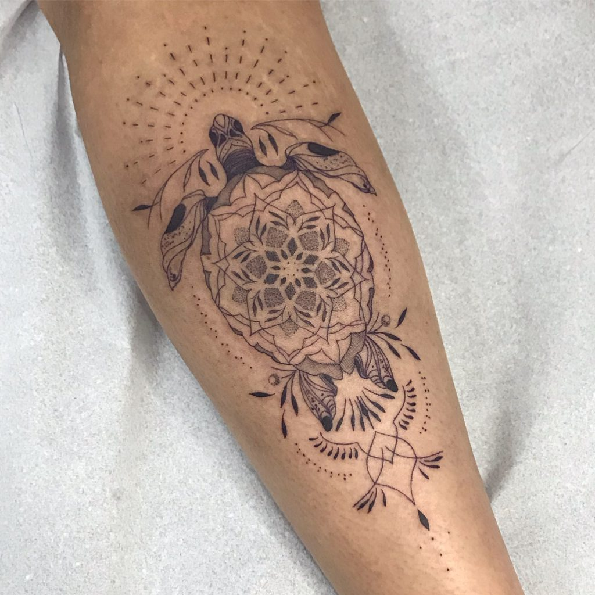

Um pouco mais sobre o Fine line
As tatuagens em Fine line, ou, abrasileirando, em linha fina, são como aquelas ondas gigantescas, volumosas, que nos arrebatam. A gente não sabe muito bem de onde veio, mas já estamos envolvidos, com mil ideias e inspirações para nossa próxima tatuagem. É bem verdade que é quase impossível não se surpreender com as linhas cada vez mais finas e com as possibilidades de se ter uma tattoo neste estilo. O estilo traz leveza, tem um ar completamente atual, moderno, e é ideal para quem busca tatuagens minimalistas. Mas não é uma regra, viu?! Aqui no Brasil, têm se destacado, cada vez mais, artistas especialistas nesse estilo. O Fineline se tornou popular e forte, embora pareça ser contraditório quando pensamos em tatuagens tão leves, simples, e, até mesmo, discretas.
Se você quer uma tatuagem pequena e delicada, com certeza o estilo Fineline é uma boa opção, pois as tatuagens em Fineline são pequenas e perfeitas para quem não quer algo grande, e sim, algo delicado e discreto! As tatuagens em Fineline são geralmente pequenas, simples e exige do artista um traço muito preciso e simétrico. Em outras palavras, se tratando do estilo “Fineline”, o traço não pode sair tremido e torto.